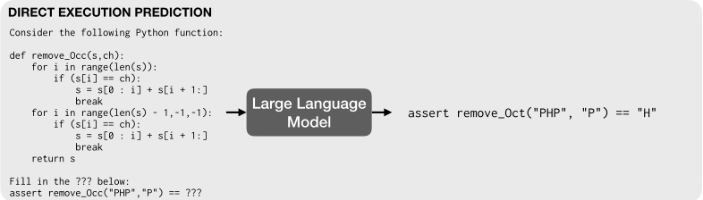
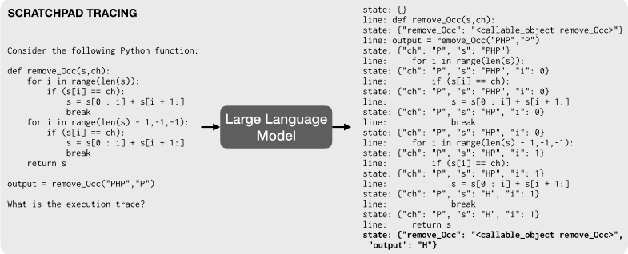
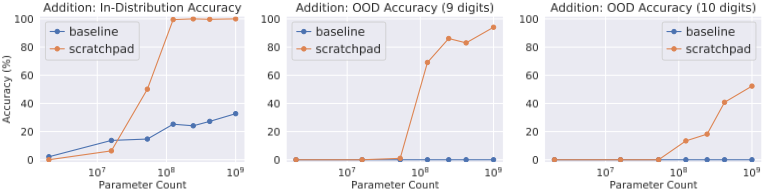
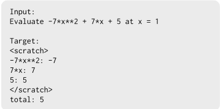
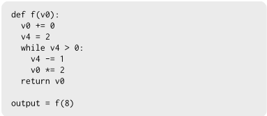
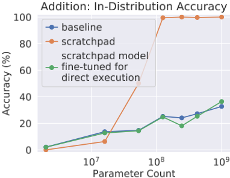

Show Your Work：用 Scratchpad 实现语言模型的中间计算
大型预训练语言模型在可一次完成的任务上表现出色，但在多位数加法、程序执行等需要多步精确计算的任务上表现很差。论文认为部分原因是模型被迫在单次前向传播中直接输出答案，无法按问题难度分配计算量。为此提出 scratchpad 方法：不改动模型架构，只把算法中间步骤编码为文本，让模型先逐步写出中间状态（如竖式加法进位、Python 逐行执行时的 JSON 变量状态），再给出最终答案，用标准监督训练或 few-shot 提示即可。实验显示 scratchpad 在加法、多项式求值与 Python 执行上大幅超越直接预测：加法任务存在临界模型规模且可外推到 9-10 位数；MBPP 执行任务结合模型自采样程序加解释器执行的数据增强后，解题数提升三倍以上，最优模型 26.6% 任务执行正确、约 42% 的 trace 完全正确。该工作是思维链类中间推理技术的先驱，对团队设计推理型提示与 Agent 中间状态管理有直接参考价值。
大型预训练语言模型擅长可一遍完成的任务（生成文本、合成程序），但在需要无界多步计算的任务上失败，例如超过三位数的 few-shot 加法、预测 Python 代码执行结果。作者认为这至少部分源于 Transformer 的应用方式：模型被要求在单次前向传播中完成任务，在层数与计算量固定的条件下，无法在产出答案前根据问题难度调整投入的计算量。
提出 scratchpad：不修改模型或训练流程，只修改任务设计——将算法的中间步骤编码为文本，训练模型在输出最终答案前先把中间计算状态逐步写入 scratchpad 缓冲区（decoder-only Transformer，标准监督训练或 few-shot 提示）。对 Python 执行任务，监督目标为逐行执行 trace：交替预测被执行的源代码行与该行执行后的局部变量状态（JSON 字典）。针对真实程序数据稀缺，提出数据增强：用 137B 模型 few-shot 采样候选程序，经 Python 解释器执行自动生成 trace 数据（MBPP-aug，17k 新程序），并进一步引入约 900 万条单行代码变换样本与 CodeNet 的 670,904 条 trace。
加法任务：超过临界模型规模后，使用 scratchpad 的模型能完成 1-8 位加法，无 scratchpad 基线在最大测试规模（1B）下仍失败；9-10 位分布外加法上基线完全失败，scratchpad 模型随规模增大持续提升
多项式求值：在 few-shot（137B，n=4）与 fine-tuning（8B）两种设置下 scratchpad 均显著优于直接预测（正文未给出具体数值，见表1）
合成 Python 程序：few-shot 与 fine-tuned 设置下 scratchpad tracing 的执行准确率均高于直接执行（具体数值见表2，正文未列出）
MBPP 极低数据量（374 任务/1122 样本）：scratchpad 仅 5% 输出准确率，低于直接执行的 10%
MBPP-aug 数据增强：scratchpad 模型解题数是仅用原始 MBPP 训练的三倍以上，逐样本 exact trace match 达 26.8%；同样的增强数据反而使直接执行模型准确率下降
叠加 CodeNet 与单行数据集后：26.6% 任务执行正确，24.6% 任务三条样例 trace 全部完全正确；最优模型贪心解码下约 42% 的 trace 完全正确；单行数据集与 CodeNet 单独训练分别为 23.4% 与 25.2%
scratchpad 执行训练对合成能力影响有限：few-shot 合成准确率 54%，对比原 few-shot 模型的 62%
消融实验：先用 scratchpad 训练再转直接执行，相比直接基线无显著收益，说明提升并非仅来自训练时的额外监督信息
先前工作通过修改神经架构支持多步计算（Adaptive Computation Time、Neural Turing Machines、Universal Transformer 等），本文反其道而行：不改模型与训练流程，仅通过任务设计（把中间步骤写成文本作为监督目标或提示）就让现有 Transformer 获得自适应计算时间与可回读的中间状态存储，并借助 token 量化减少误差复合。此外提出用模型自采样程序加解释器执行自动构造 trace 训练数据的增强方法，并发现该增强对 scratchpad 有效、对直接执行有害。
相关度级别：high
命中能力域：3.2 提示工程 | 3.1 上下文工程与记忆
理由：本文是思维链/中间推理提示技术的奠基性工作，直接命中 3.2 提示工程中的思维链/推理提示与提示模式设计：scratchpad 证明了让模型先输出结构化中间步骤再给答案这一任务设计能大幅提升多步计算可靠性，是团队在代码生成、审查、测试辅助等场景设计推理型提示的技术源头。同时 scratchpad 把中间状态以结构化文本（JSON 状态字典）写入上下文并供模型通过 attention 回读，是 3.1 上下文工程与记忆中结构化上下文组织与 Agent 中间状态缓冲的思想雏形。论文还给出对落地很关键的经验：极低数据量下 scratchpad 反而更差、中间格式需按任务设计且可通过检查模型输出迭代修正、生成窗口长度是硬约束。Python 逐行 trace 方法对团队的代码理解/审查类工具亦有直接借鉴意义。
建议动作：深入精读并做内部分享
arXiv:2112.00114v1 [cs.LG] 2021年11月30日
1 麻省理工学院（MIT）
2 Google Research，Brain 团队
3 Google Research，Blueshift 团队
大型预训练语言模型在可以“一遍完成”的任务上表现极为出色，例如生成逼真的文本（Brown et al., 2020）或合成计算机程序（Chen et al., 2021; Austin et al., 2021）。然而，它们在需要无界多步计算的任务上却难以应对，例如整数加法（Brown et al., 2020）或执行程序（Austin et al., 2021）。令人惊讶的是，我们发现这些同样的模型在被要求“逐步”执行运算并展示中间计算结果时，能够完成复杂的多步计算——即使是在少样本（few-shot）设定下也是如此。具体而言，我们通过要求 Transformer 将中间计算步骤输出到“草稿纸”（scratchpad）中，来训练其执行多步计算。在一系列难度递增的任务上——从长加法到任意程序的执行——我们表明，草稿纸能显著提升语言模型执行多步计算的能力。
基于 Transformer 的大型语言模型展现出令人惊讶的出色能力（Devlin et al., 2019; Brown et al., 2020），包括生成能够解决简单编程问题的代码的能力（Chen et al., 2021; Austin et al., 2021）。然而，这些模型难以执行多步算法计算，尤其是那些需要精确推理和无界计算的计算。例如，GPT-3 难以对超过三位数的数字执行少样本加法（Brown et al., 2020）。类似地，大规模语言模型难以预测 Python 代码执行的结果，即便是模型能够解决的编程任务的解代码也不例外（Austin et al., 2021）。同样，标准的循环神经网络和图神经网络在预测带循环的简单程序的输出时无法实现系统性泛化（Bieber et al., 2020）。因此，语言模型在一定程度上能够编写代码，但似乎并不能准确表示其所写代码的语义，因为它们无法预测代码的执行。这推动了针对能够执行算法推理的网络的研究（Graves et al., 2014; Zaremba & Sutskever, 2014; Bieber et al., 2020）。能够准确表示程序语义的神经网络可以支持多种下游任务，包括程序合成（Devlin et al., 2017）、程序分析（Allamanis et al., 2018）以及其他算法推理任务（Velickovic &Blundell, 2021）。
为什么大型语言模型在算法推理任务上表现不佳？我们认为，这至少部分归因于将 Transformer 架构应用于这些任务的方式存在局限：模型被要求在一次前向传播中完成这些任务。在层数固定、计算时间固定的情况下，模型无法在产生输出之前根据问题的难度调整花费在该问题上的计算量。1 先前的工作（Graves, 2016; Banino et al., 2021）探索了显式允许为不同子任务动态分配计算时间的神经架构。在本工作中，我们提出了一种不同的方法——一种能够利用现有 Transformer 架构和具备少样本能力的大型语言模型的方法——我们修改的是任务设计，而非模型或训练过程。
∗ 通讯请致：mnye@mit.edu。Max 是 MIT 的学生，但这项工作主要是他在访问 Google Research 期间完成的。
1


我们的提议很简单：允许模型在产生最终答案之前，先生成一个任意的中间 token 序列，我们将其称为草稿纸（scratchpad）。例如，在加法问题上，草稿纸中包含标准长加法算法的中间结果（见图 2）。为了训练模型，我们将算法的中间步骤编码为文本，并使用标准的监督训练。
本文做出了以下贡献：
1 Transformer 所执行的计算量与输入序列长度呈二次方关系，因此在理论上无法完美模拟时间复杂度高于 O ( n 2 ) 的算法。然而，这一理论界限在实际中的相关程度尚不清楚；神经序列预测本身是近似的，而且在实践中 Transformer 的规模可能足够庞大，以至于能够有效地记住可能输入的相关子空间（例如，规模不超过某一上限的所有输入）的正确解。
2
算时间，也就是说，它现在可以根据给定输入的任务复杂程度，在需要的时间内处理信息。其次，模型可以将其计算的中间状态存储在草稿缓冲区（scratch buffer）中，并通过关注其上下文来回顾引用这些状态。这就免去了将所有中间状态存储在激活值（activations）中的需要。第三，通过强制模型以从生成模型中采样的方式输出具体的中间状态，我们旨在减少小误差的传播与累积，因为状态会被量化为词元嵌入（token embeddings）。在诸如神经图灵机（Neural Turing Machines，Graves et al., 2014）这类使用循环结构（recurrence）来支持扩展计算的方法中，就可能出现这类累积误差。最后，检查模型的草稿板（scratchpad）输出可以帮助我们识别常见错误，并通过修改草稿板格式来纠正这些错误。我们发现这种解读错误的能力在本工作中非常有用。
Input: 2 9 + 5 7 Target: <scratch> 2 9 + 5 7 , C: 0 2 + 5 , 6 C: 1 # added 9 + 7 = 6 carry 1 , 8 6 C: 0 # added 2 + 5 + 1 = 8 carry 0 0 8 6 </scratch> 8 6
3

在所有实验中，我们使用了预训练的稠密（dense）仅解码器（decoder-only）Transformer 语言模型，参数规模从 200 万到 1370 亿不等。这些模型在网页文档和对话数据上进行了预训练，与 Austin et al. (2021) 所使用的模型相对应。
作为第一个任务，我们考虑整数加法。基线加法任务将两个数字作为输入，目标是它们的和。例如：2
我们按照图 2 所示，通过在目标中纳入长加法算法的中间步骤来实现草稿纸（scratchpad）。我们在输入为 1-8 位数字的整数加法问题上训练了多个模型。随后，我们在分布内（in-distribution）加法问题（输入最多为 8 位数字）以及输入为 9 位和 10 位数字的分布外（out-of-distribution）问题上测试性能。模型在 10 万个样本上进行微调，训练 5000 步，批大小为 32。分布内测试样本有 1 万个，每个分布外任务各有 1000 个测试样本。我们考察了性能随模型规模变化的函数关系，模型参数规模从 200 万到 10 亿不等。我们将性能与一个基线进行比较，该基线包含输入数字和目标数字，但不包含中间的草稿纸步骤。
结果 图 3 将草稿纸算法的性能与基线进行了比较。我们看到，在超过某个临界模型规模后，模型能够使用草稿纸解决加法任务，而未使用草稿纸训练的模型即使在所测试的最大规模下也无法做到。在分布外任务（9-10 位数字加法）上，我们发现未使用草稿纸训练的模型完全失败，而使用草稿纸训练的模型则随模型规模的增大表现出持续的改进。
接下来我们关注一个层次稍高的任务：多项式求值。受 Saxton et al. (2019) 中“多项式求值”子问题的启发，我们生成了一个由次数小于等于 3 的多项式组成的数据集，其系数为整数，输入被约束在 [ - 10 , 10] 范围内。我们还将输出限制在 [ - 1000 , 1000] 范围内。我们生成了一个包含 10,000 个多项式的训练数据集和一个规模为 2,000 的测试数据集。图 4 展示了该任务的一个草稿纸目标示例，其中多项式的每一项被分别求值。与上一节一样，我们将直接执行的结果与使用草稿纸的结果进行比较。在本实验中，我们使用一个 137B 参数的预训练仅解码器（decoder-only）模型在少样本（few-shot）设置下进行评估，因为先前的工作表明，非常大的模型或许能够以少样本方式执行 3 位或更少位数的加法和乘法（Brown et al., 2020）。我们在少样本提示中使用 n = 4 个示例问题。我们还在微调（fine-tuning）设置下进行评估，使用一个在训练集上微调了 2000 步的 8B 参数模型。两项评估的结果如表 1 所示。我们发现，草稿纸执行在少样本和微调两种设置下都显著优于直接执行。
2 我们在数字之间引入空格，以确保每个数字都被映射到一个单独的 token。
4

我们已经证明，草稿纸（scratchpad）可以帮助算法归纳（algorithm induction），也就是说，它们可以在直接的算法特定监督下帮助模型学习实现某个特定算法。但是，为每个新任务手工设计中间状态并非最优做法。在本节中，我们评估模型能否通过执行任意代码来学习实现新算法。为了测试这一能力，我们遵循 Austin 等人（2021）的问题设置，其中要求语言模型预测在特定输入上执行给定 Python 程序的结果。语言模型在这项任务上表现不佳，即使对于那些作为模型能够解决的编程任务的解的程序也是如此。在这里，我们展示草稿纸技术可以显著提升语言模型执行程序的能力。
直接执行预测（direct execution prediction） 我们的主要基线是 Austin 等人（2021）中探讨的直接执行预测流程。模型会看到某个函数的源代码，并被要求预测在特定输入上运行该函数的输出。例如，图 1 中的函数以字符串 s 和字符 ch 作为输入，并从字符串 s 中移除第一个和最后一个字符 ch 实例。该任务的直接执行提示和目标如图 1 中"Direct Execution Prediction"框所示。在这种机制下，如果模型正确输出目标字符串，则认为任务已被解决。
通过草稿纸追踪进行执行预测（execution prediction via scratchpad tracing） 如上所述，直接执行预测要求模型在单次处理中正确输出执行整个函数的结果。Austin 等人（2021）已表明，直接执行预测在 Python 程序上表现不佳。因此，我们为执行任务设计了一种草稿纸表述方式，其中模型通过首先预测程序执行期间计算出的中间状态序列来预测程序的输出。形式上，我们训练模型预测一个交替序列：1）被执行的源代码行的有序序列，以及 2）每行执行后局部变量的状态。我们将这一对象称为程序的追踪（trace），它使我们能够同时跟踪控制流（control flow）——即所执行的操作序列——以及状态如何随每次操作而变化。我们将追踪表示为一个字符串，其中代码行被直接复现，而状态信息则表示为 JSON 字典。3 例如，图 1 中的"Scratchpad Tracing"框包含了上述函数的追踪提示和追踪目标。
Concretely, for each function to be traced, the prompt is formed by printing the function definition, followed by a line which calls the function on a particular input: output = fn name(input value) , where fn name and input value are replaced with the corresponding function name and input value. In Figure 1, note how the correct output of remove Occ("PHP","P") is shown in the last line of the trace, assigned to the variable "output" . A tracing example is considered to have the correct execution output if the encoding of the value assigned to the variable output in the last line is a semantic match with the target output value (here, "output": "P" ). We consider a task to be executed correctly if all given input-output examples are correctly executed. We can also test Table 2: Synthetic tracing and execution results. Scratchpad outperforms direct prediction both for few-shot and fine-tuned.
3 Some objects cannot be represented using this JSON representation. Some objects (such as tuples) are represented by the closest JSON data type (in this case, lists). Other objects, such as user-constructed objects, are represented by a placeholder string, e.g., "<object myObject>" . Functions are also represented as strings, e.g., "<callable object f>" .
| Few-shot | Fine-tuning | |
|---|---|---|
| Direct prediction | 8.8% | 31.8% |
| Scratchpad | 20.1% | 50.7% |
| | Few-shot | Fine-tuning |
5

*The accuracy criterion for the few-shot scratchpad condition was slightly modified, see the text
| Few-shot | Fine-tuned | |
|---|---|---|
| Direct prediction | 11% | 20% |
| Scratchpad | 26.5%* | 41.5% |
| | Few-shot | Fine-tuned |
whether there is a 'trace exact match' between the model prediction and the ground truth trace, by a) semantically comparing each state in the trace to the corresponding state in the ground truth trace, and b) comparing the sequence of source code lines predicted with the ground truth sequence.
Experimental setup As a proof-of-concept, we first show that scratchpad tracing greatly improves execution performance on synthetic Python data. Then, we compare scratchpad tracing and execution on the human-written Python problems from Austin et al. (2021). We find that a novel data augmentation technique that uses programs generated by the model as additional training data can significantly increase tracing performance on real data, whereas this augmentation technique hurts performance for direct execution. Finally, we show that incorporating tracing data from additional sources further improves tracing performance, indicating that the scratchpad tracing technique explored here may scale well with more data.
For all experiments on Python code, we use a Transformer model with around 137 billion parameters, a context window of 1024 tokens and a limit of 512 generation tokens. Unless otherwise stated, all fine-tuning runs used a batch size of 8192 tokens and a learning rate of 3e-5, and model inference was performed with decoding temperature set to T = 0 , equivalent to greedy decoding.
在第一个实验中，我们在简单的合成 Python 程序上测试了模型的少样本（few-shot）执行能力与微调后的执行能力。这为我们的追踪（tracing）技术提供了概念验证。
我们使用了一个由 Bieber et al. (2020) 的数据集修改而来的合成 Python 程序数据集。这些程序包含小整数（0、1 和 2）、简单的 while 循环以及 if 语句。我们构建了一个合成程序语料库，其规模仿照 Austin et al. (2021) 中的 MBPP 数据集，包含 400 个训练程序、100 个验证程序和 200 个测试程序。对于每个程序，从 0 到 9 的范围内采样三个随机整数输入。
我们在少样本和微调两种条件下对执行与草稿纸（Scratchpad）追踪进行了测试。对于少样本实验，提示（prompt）中包含三个先前追踪问题的示例，如附录 C 所示。对于微调实验，我们以验证困惑度（validation perplexity）为判据，将模型在训练集划分上微调至收敛。
在少样本 Scratchpad 实验中，我们注意到模型不会将变量名 output 赋给追踪中的最终值，而是会继续使用 v0（函数 f 中返回的变量名）作为最终输出行的变量名。因此，我们将准确率判定标准从检查追踪最后一行中 output 的值是否正确，改为检查 v0 的值是否正确。（在朴素评分下，少样本追踪的准确率几乎为零。）附录 D 中展示了这种行为的一个示例。
结果：表 2 展示了我们在合成 Python 问题上的结果。在少样本和微调两种设置下，Scratchpad 追踪技术在 200 个测试问题上都带来了更高的整体执行准确率。此外，微调对 Scratchpad 追踪技术的性能提升幅度也大于对直接执行的提升幅度。
6
在第二组实验中，我们探究了在真实数据上，Scratchpad 相比于直接执行的表现如何。我们的主要评估数据集是 Austin 等人（2021）提出的 MBPP 数据集。MBPP 由 1000 个编程问题组成，每个问题包含一段自然语言描述、一个真实（ground-truth）Python 程序以及三个输入-输出测试用例。这些程序涉及使用多种数据类型的计算，包括整数（int）、字符串（string）、浮点数（float）、字典（dictionary）、元组（tuple）等，并包含许多语言特性和控制流结构，例如循环、推导式（comprehension）、库导入、API 调用和递归。MBPP 数据集的评估集划分包含 500 个任务。为了分离出生成窗口大小带来的影响，我们仅在这些任务的一个子集上报告所有评估指标，该子集满足：对于全部三个输入-输出示例，真实追踪（ground-truth trace）均能容纳于模型的生成窗口之内。这样便得到一个包含 212 个测试任务的子集。对于基于 Transformer 的模型而言，增加生成窗口和上下文窗口的长度是一个重要问题，但我们认为该问题与本文的研究正交，故将其留待未来工作。
在我们使用 MBPP 数据进行的第一个实验中，我们在 374 个训练任务上训练了一个草稿纸（scratchpad）追踪模型（每个任务 3 个示例，因此共有 1122 个示例）。我们丢弃了所有超出上下文窗口的训练示例。我们将整体执行结果与在相同 374 个训练任务上训练得到的直接执行（direct execution）模型进行比较。表 3 中 Direct Execution 和 Scratchpad 下方标记为 'MBPP' 的列展示了该实验的结果。草稿纸模型和直接执行模型均未取得良好的性能（输出准确率分别为 5% 和 10%），并且直接执行的表现优于草稿纸模型。
接下来，我们采用一种数据增强技术来扩大训练数据集的规模：我们首先按照 Austin 等人（2021）所述的方法，使用预训练的 137B 模型在 374 个 MBPP 训练任务上运行少样本合成（few-shot synthesis）。对于每个任务，我们在温度 T = 0 . 5 下从模型中采样并记录 80 个候选程序 { P s }。随后，我们可以利用候选程序 P s、该任务原有的三个输入 { x i } i =1 , 2 , 3，以及在原有三个输入上运行该候选程序所得到的三个新输出 { y i new } i =1 , 2 , 3（其中 y i new = P s ( x i )），来创建一个新的执行数据点。我们丢弃所有执行结果出现错误的候选程序。请注意，y i new 的输出可能等于也可能不等于原始输出，这取决于生成的程序 P s 所执行的计算。因此，与原始数据集相比，这个增强后的直接执行数据集既包含额外的新程序，也包含新的输出。类似地，我们可以通过追踪每个候选程序 P s 在每个 x i 上的执行过程，为我们的草稿纸模型创建一个追踪数据集。这一过程产生了包含 17k 个新程序的规模大得多的追踪数据集和执行数据集，我们将其称为 MBPP-aug。
从概念上讲，我们是利用手头已有工具的组合来增强数据集的，即 a) 神经模型，以及 b) 通过 Python 解释器执行程序。我们采用与上文相同的过程，在这个新的增强数据集 MBPP-aug 上对直接执行模型和草稿纸模型进行微调。
表 3 中 'MBPP-aug' 下方的列展示了该实验的结果。虽然直接执行方法在用这些额外数据进行训练时准确率有所下降，但草稿纸模型的性能得到了大幅提升；用增强数据训练的模型所解决的任务数量是用原始 MBPP 程序训练的模型的三倍以上。我们还注意到，如果跨所有样本衡量原始正确率，该模型已经达到了 26.8% 的精确轨迹匹配（exact trace match），这一结果高得令人惊讶。
在本节中，我们研究从人工编写的程序中收集额外的轨迹数据是否能进一步提升轨迹化性能。这将使我们能够理解，当在微调数据集中加入略微偏离分布（out-of-distribution）的轨迹数据时，本文的轨迹化过程是否可能具有良好的可扩展性。我们使用两个数据集进行实验：
7
表 3：在不同数据集上微调并在 MBPP 程序上进行评估的模型的比较。我们报告“逐任务”（per-task）执行准确率和轨迹化准确率，其要求所有样本均被正确执行/轨迹化。我们还额外报告“逐样本”（per-example）准确率，其对应于整个数据集中被正确执行/轨迹化的测试样本所占的总比例。我们发现，在用来自模型的样本进行增强的数据集上训练草稿纸模型，可显著提升草稿纸模型的性能，而这会损害直接执行模型的性能。将来自多个来源的轨迹训练数据相结合，可进一步提升草稿纸模型的性能。
| Direct execution.MBPP.(§5.2.1) | Direct execution.MBPP-aug.(§5.2.2) | Scratchpad.MBPP.(§5.2.1) | Scratchpad.MBPP-aug.(§5.2.2) | Scratchpad.MBPP-aug +CodeNet +single line.(§5.3) | Scratchpad.MBPP-aug +CodeNet.(§5.3) | Scratchpad.MBPP-aug +single line.(§5.3) | |
|---|---|---|---|---|---|---|---|
| per-task execution acc: | 10.3 | 5.1 | 5.1 | 17.3 | 26.6 | 25.2 | 23.4 |
| per-task trace acc: | n/a | n/a | 0.9 | 13.1 | 24.6 | 22 | 21.5 |
| per-example execution acc: | 22.0 | 12.3 | 24.6 | 35.5 | 46 | 45.3 | 43.5 |
| per-example trace acc: | n/a | n/a | 6.7 | 26.8 | 41.9 | 42.1 | 40.2 |
| | Direct execution.MBPP.(§5.2.1) | Direct execution.MBPP-aug.(§5.2.2) | Scratchpad.MBPP.(§5.2.1) | Scratchpad.MBPP-aug.(§5.2.2) | Scratchpad.MBPP-aug +CodeNet +single line.(§5.3) | Scratchpad.MBPP-aug +CodeNet.(§5.3) | Scratchpad.MBPP-aug +single line.(§5.3) |
state: b = 15; code: b = b // 2; output: b = 7; state: g = 100; i = 1; l = [100, 100, 0, 0, -100, -100]; code: g += l[i]; output: g = 200; i = 1; l = [100, 100, 0, 0, -100, -100]; state: s = 'aabbcd'; code: o = set(s); output: o = {'a', 'b', 'c', 'd'}; s = 'aabbcd'; state: f = 63; i = 11; j = 53; code: f = i ˆ j; output: f = 62; i = 11; j = 53; a, b, x = map(int, input().split()) if a // 2 < b: if x % 1000 == 0: print (a*(x//1000)) else : if (x % 1000) / 500 > 1: print (min(a*(x//1000 + 1), a*(x//1000) + b*2)) else : print (min(a*(x//1000 + 1), a*(x//1000) + b)) else : if x % 500 == 0: print (b*(x//500)) else : print (b*(x//500 + 1))
单行程序（Single-line programs） 该数据集由大约 900 万个单行 Python 变换样本组成。图 6（上）展示了这些变换的示例。每个变换由一组初始变量及其对应的取值、一行 Python 代码（这两者共同构成输入），以及运行该行代码后所得到的新的变量及取值集合（即目标）组成。在单行数据上进行训练时，我们不引入中间草稿纸步骤。尽管该数据集并未提供轨迹中高层多行控制流的示例，但这些数据为建模单行代码的执行提供了良好的监督，而单行代码的执行正是轨迹化的一个关键组成部分。该数据由 Fraser Greenlee 收集，可在此处获取。
CodeNet Project CodeNet 数据集（Puri et al., 2021）由针对约 4,000 道编程题的数百万份用户提交代码组成。这些提交既包含正确的解题方案，也包含错误的解题方案。然而，从上文 MBPP-aug 的实验中我们知道，错误或损坏的程序仍然能够提供有用的训练信号。我们还改进了轨迹追踪技术，使其能够追踪带有错误的程序；当遇到错误时，会将错误信息添加到轨迹文本的末尾，并停止追踪。我们从 CodeNet 数据中总共提取了 670,904 条轨迹。对于每个数据集，我们首先在这些数据集上对模型进行微调，然后再在 MBPP-aug 上进行第二次微调，直至收敛。
结果 结果如表 3 所示。与上文一样，我们报告跨任务的执行准确率。我们还额外报告了跨任务的轨迹准确率，以了解整条轨迹被准确预测的程度。此外，我们还报告了所有测试样例上的原始执行准确率和轨迹准确率，作为比较模型的另一项指标。
8
仅在单行数据集或 CodeNet 数据集上训练，似乎都能带来相对于 MBPP-aug 的提升（分别有 23.4% 和 25.2% 的任务被正确执行）。然而，将 CodeNet 与单行数据集相结合似乎能带来最高的性能；追踪为 26.6% 的任务产生了正确的最终输出，并且近四分之一的任务（24.6%）在全部三个样例上都得到了完美的追踪。这些结果看起来很有前景：神经网络通常能够精确地追踪程序。特别是，从最佳模型进行贪心解码时，所有轨迹中有近 42% 能够得到完全正确的轨迹。
本文中的任务可以被视为对大语言模型所受一项批评的探索，即它们在多大程度上仅仅依赖文本表层的统计相关性，而没有学习语义或世界知识（Bender & Koller, 2020）？作为回应，Li 等人（2021）提供了证据，表明预训练语言模型确实会为其在文本中所描述的情境构建语义的近似表示。在程序方面，Austin 等人（2021）通过在 MBPP 上探索学习执行（learning to execute）任务来研究这一问题，我们在 5.2 节中对此进行了讨论。该任务背后的想法是探索用于合成的、生成代码的神经模型是否也能执行这些代码。虽然该工作发现现有模型在预测执行方面表现不佳，但我们表明，添加草稿纸（scratchpad）能让这些模型表现得更好。
关于学习执行的研究已经考察了现成的循环神经网络（Zaremba & Sutskever, 2014）或更专门的架构（Dehghani et al., 2018; Bieber et al., 2020; Wang et al., 2020）是否具有足够适合执行任意代码并对其进行推理的归纳偏置（inductive bias）。与之相关的神经算法归纳（neural algorithm induction）问题引起了相当大的关注（Graves et al., 2014; Kurach et al., 2016; Kaiser & Sutskever, 2016; Graves et al., 2016; Reed & de Freitas, 2016; Veliˇ ckovi´ c et al., 2020a;b）。这些工作受理论计算模型启发，提出了新的神经架构，其归纳偏置使其能够更容易地学习算法归纳任务。若干算法归纳方法专门为序列模型添加了自适应计算时间（adaptive computation time）（Graves, 2016; Dehghani et al., 2018; Banino et al., 2021）。特别是，Universal Transformer 包含自适应计算时间，并且在算法归纳和学习执行两类任务上都得到了评估（Dehghani et al., 2018）。相比之下，scratchpad 是一种简单的方式，既能为 Transformer 模型提供自适应计算时间，又能就如何使用这些额外计算提供监督，而无需修改底层架构。
算法归纳也与预训练模型建立了联系。Lu 等人（2021）表明，通过在自然语言上进行预训练，并在包括简单算法归纳任务在内的非语言任务上微调一小部分权重，Transformer 可以在一定程度上被用作通用计算引擎。最后，语义解析（semantic parsing）的有监督方法（Zelle & Mooney, 1996; Zettlemoyer & Collins, 2005; Kwiatkowksi et al., 2010; Wong & Mooney, 2006）预测数据库查询的文本，随后可以执行该查询来回答自然语言问题。
上下文窗口大小 在本工作中，我们将实验限制在草稿纸（scratchpad）文本能够容纳于模型生成窗口（512 个 token）之内的问题上。然而，许多问题需要非常长的草稿纸生成。因此，要充分发挥草稿纸技术的潜力，可能需要进一步改进 Transformer 的生成窗口大小。这是自然语言处理（NLP）领域的一个活跃研究方向（Tay et al., 2020），相关进展将有益于草稿纸技术。
无监督学习使用草稿纸 一个明确的下一步是尝试在没有直接监督的情况下学习使用草稿纸。一种简单的方法是使用强化学习（RL）技术：模型因正确回答问题而获得奖励，奖励大小与所使用的草稿纸 token 数量成反比。我们期望学习使用草稿纸能够成为一种可迁移的技能；例如，模型有可能利用它学到的执行长加法的算法，在多项式求值上取得成功。
9
在这项工作中，我们通过在长加法、多项式求值和 Python 代码执行上的实验表明，允许模型对简单的草稿纸进行读写，能够提升其在算法任务上的性能。这类模型或许是将大语言模型的知识压缩能力与推理能力相结合的第一步，从而构建出既能理解代码又能编写代码的模型。这对于多种既需要处理自然语言又需要对程序语义进行推理的应用可能很有用，例如程序综合、神经引导的程序分析以及交互式编程助手。本文提出的草稿纸技术或许无法让我们完全实现这一目标，但我们希望它是迈向该目标的重要一步。
为了衡量在上述追踪任务上进行微调在多大程度上影响模型执行程序综合的能力，我们使用 'MBPPaug + CodeNet + single line' 模型进行了一项少样本（few-shot）综合实验。具体而言，我们按照 Austin et al. (2021) 中所述的方法，在 MBPP 数据集上进行了少样本综合。对于每个 MBPP 综合任务，从模型中采样 80 个候选程序（T = 0.5），只要其中任何一个候选程序满足全部三个测试用例，即认为该任务已被解决。更多细节请参见 Austin et al. (2021)。'MBPP-aug + CodeNet + single line' 模型取得了 54% 的总体综合准确率，相比之下，Austin et al. (2021) 中原始少样本模型的准确率为 62%。这表明草稿纸执行训练并未完全破坏模型执行其他少样本任务的能力。
在第 3 节的长加法实验中，我们比较了训练为执行“直接执行”（direct execution）的模型（即基线）与训练为使用草稿纸的模型。由于训练为使用草稿纸的模型会从所展示的全部中间步骤中获得一个额外信号，我们还研究了如果随后将草稿纸模型训练为进行直接执行（即不使用草稿纸而直接输出目标）会发生什么。结果如图 7 所示，其中我们遵循了与原始直接执行基线模型和草稿纸模型相同的训练流程。我们没有看到使用草稿纸进行任何中间训练所带来的显著收益。这表明草稿纸模型在训练期间看到的额外信息似乎并不是草稿纸模型性能提升的唯一原因。
下面是第 5.1 节所讨论的少样本（few-shot）合成实验失败的一个示例。给定如下问题：
def f(v0): v0 += 2 v0 *= 2 v0 *= 1 return v0 output = f(8) 执行轨迹是什么？
模型产生了如下轨迹：
state: {"v0": 8} line: def f(v0): state: {"v0": 8, "f": "<function f at 0x00BFC1C0>"} line: v0 += 2 state: {"v0": 10} line: v0 *= 2 state: {"v0": 20} line: v0 *= 1 state: {"v0": 20} line: return v0 state: {"f": "<function f at 0x00BFC1C0>", "v0": 20}
请注意，该轨迹完全正确，只有最后一行例外：模型预测的是 "v0": 20，而正确的输出应为 "output": 20。由于这类错误在少样本合成 Python 实验中持续出现，我们对评估脚本做了轻微修改，将此输出视为正确。
15

16